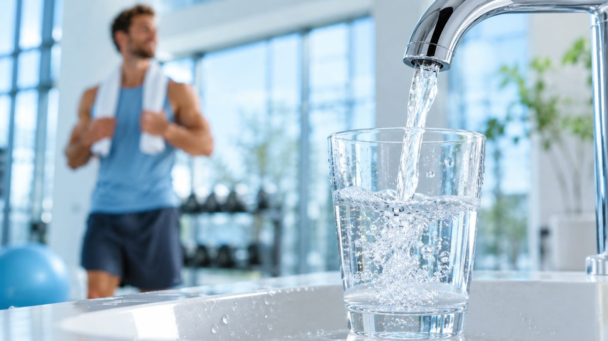
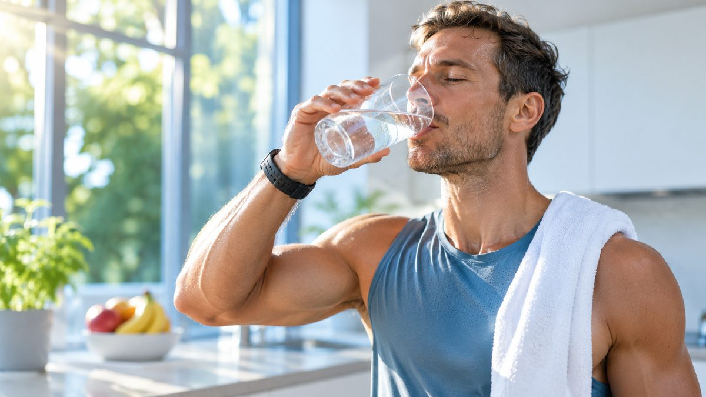
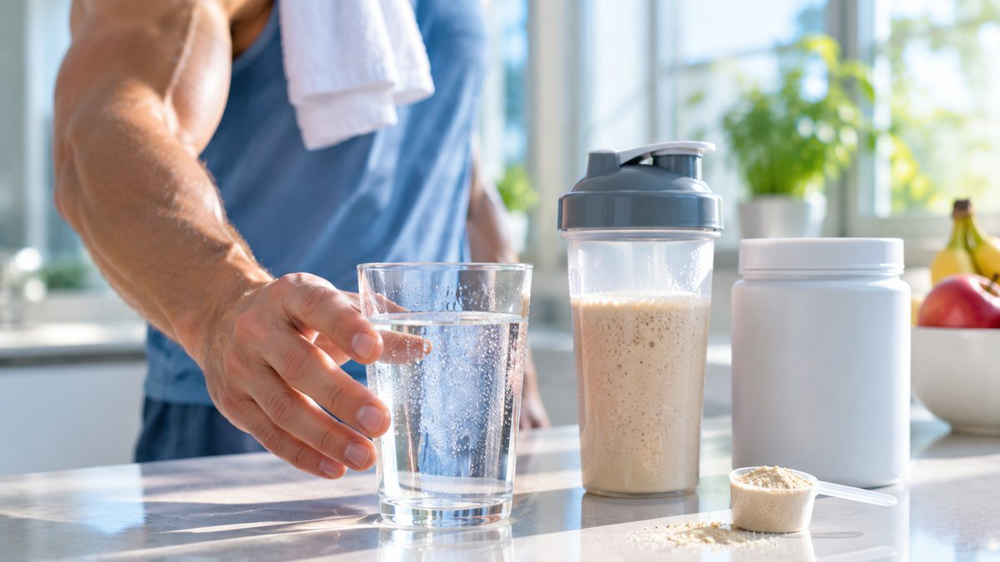
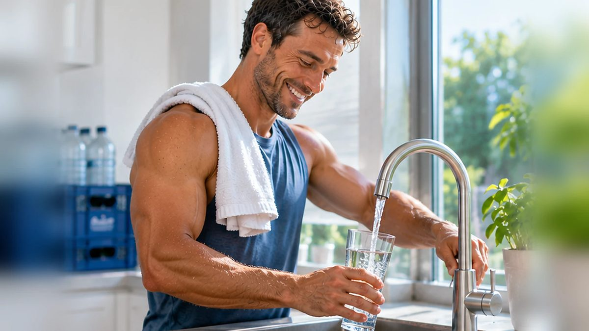
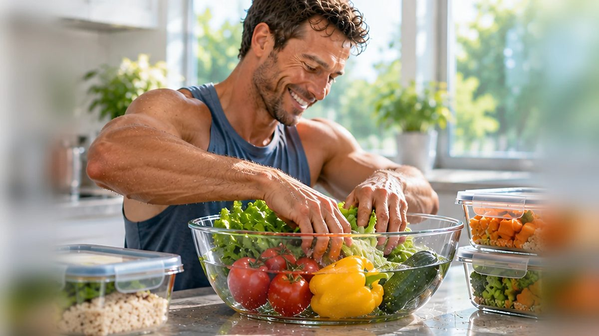
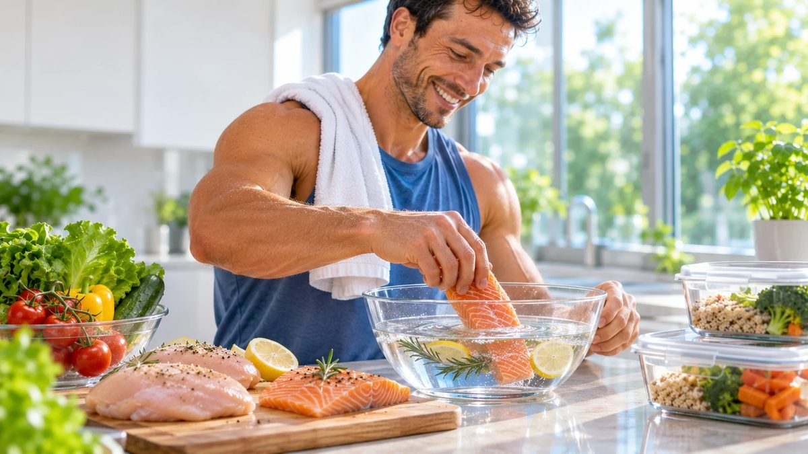
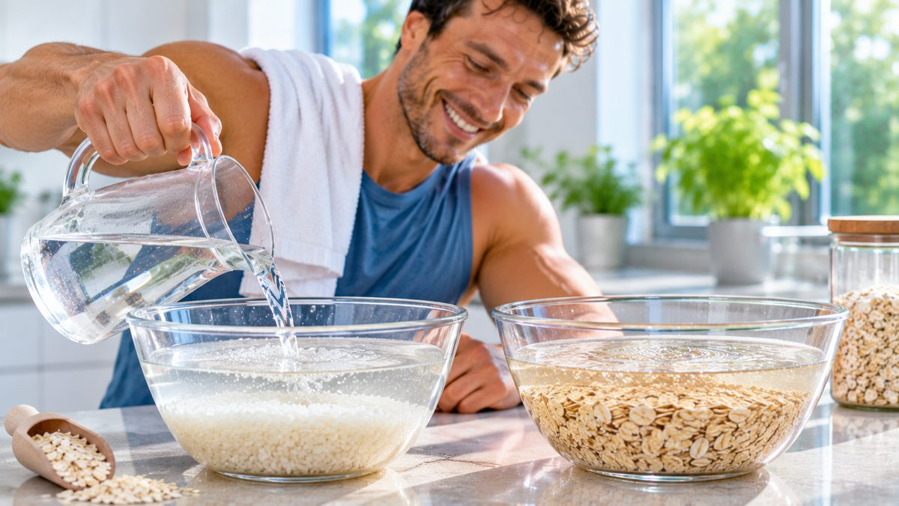
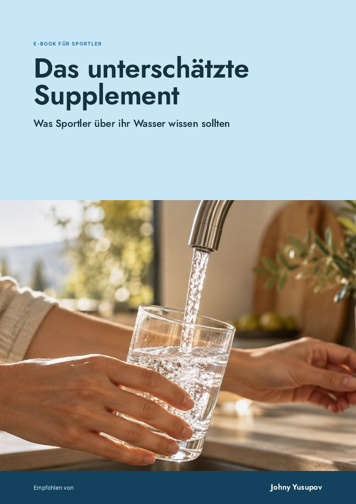

Eiweiß, Schlaf, Trainingsplan: bei mir war immer alles durchdacht. Nur beim Wasser habe ich nie hingeschaut, drei, vier Liter am Tag aus der Plastikflasche. Das habe ich geändert.
Im Kampf zählt jedes Detail: Training, Ernährung, Regeneration. Und eben auch das, was ich jeden Tag trinke.
Auf jedes Gramm Eiweiß achtest du. Wasser trinkst du jeden Tag literweise, und genau da schaut kaum jemand auf die Qualität.
Sportler berichten, dass sie nach dem Training schneller regenerieren. Laktat wird schneller abgebaut, der Muskelkater fällt kleiner aus.

Das Wasser wird im Gerät elektrolysiert. Viele Nutzer erleben, dass sie damit besser hydriert sind als mit Wasser aus der Flasche.

Weich im Geschmack, ohne Chlorgeruch. Die meisten trinken damit ganz von allein mehr, auch die, die es vorher nie geschafft haben.

Shakes, Kreatin, Vitamine: Viele nehmen ihre Supplements mit dem basischen Trinkwasser ein, weil es die Wirkung unterstützt.
Regeneration passiert nachts. Viele Nutzer berichten, dass sich ihr Schlaf verbessert, seit sie umgestiegen sind.

Frisches Wasser direkt aus deinem Hahn, so viel du willst. Keine Flaschen, kein Schleppen, kein Plastik im Wasser.
Regeneration, Hydration, Säure und Basen: Im Video siehst du, wie das Wasser direkt aus dem Gerät kommt und was es vom Wasser aus der Flasche unterscheidet.
Ich will das Gerät kennenlernenAls Faustregel gelten 40 ml je Kilo Körpergewicht. An Trainingstagen kommt das dazu, was du ausschwitzt.
Das sind rund 1.310 Liter im Jahr. In 1,5-Liter-Flaschen wären das 146 Sechserträger zum Schleppen.
Der stärkste Mann der Welt 2017 zeigt sein Kangen-Gerät zu Hause und erklärt, warum er es nutzt.
In der Doku „Soy Georgina“ steht es in der Küche der Familie: ein Kangen-Gerät. Achte mal drauf.
Das Gerät macht nicht nur Trinkwasser. Mit den verschiedenen pH-Werten bereitest du dein Essen anders vor.

45 Minuten in pH 11,5 einlegen, danach mit pH 9,5 abspülen. Das hilft, Rückstände von der Schale zu lösen.

45 Minuten in pH 11,5 eingelegt wird Fleisch zarter. Mit pH 2,5 nimmst du Gerüche von Fisch und Brettern.

30 Minuten in pH 11,5 einweichen, mit pH 9,5 abspülen. Gekocht wird mit pH 9,5, Eier und Pasta mit pH 6,0.
Trag dich ein, wenn du ernsthaft überlegst, dir ein eigenes Kangen-Gerät zu holen. Das passiert danach:
Du willst dich erst mal nur einlesen? Dann hol dir weiter unten mein E-Book.

Was in deinem Trinkwasser steckt, warum Sportler so genau hinschauen und was die fünf Wasserarten für Training, Küche und Alltag können.